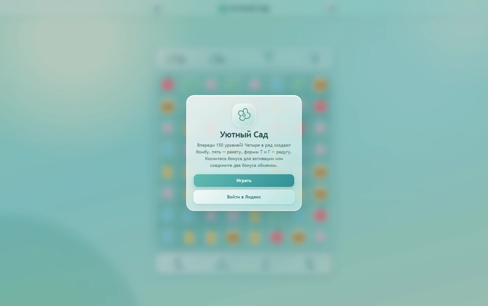
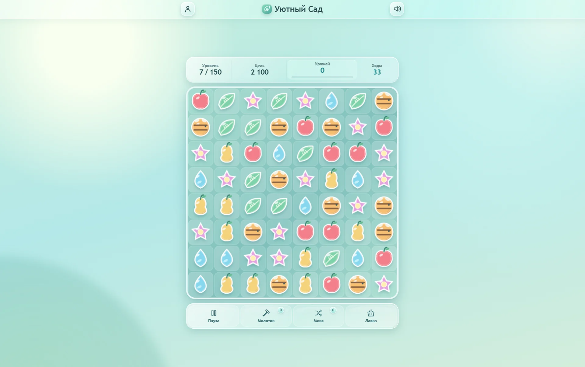
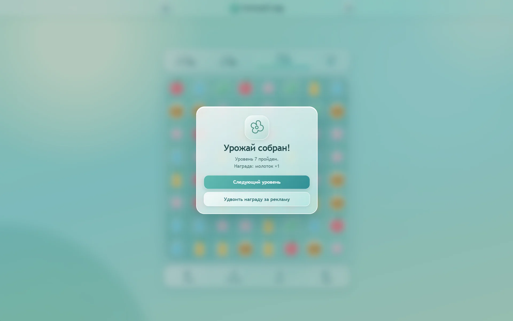
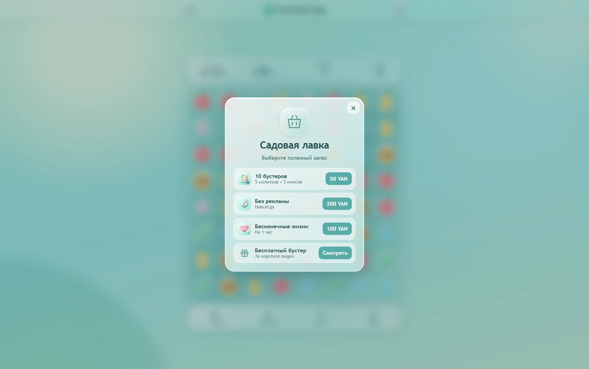

УЮТНЫЙ САД
«Три в ряд», где спокойная атмосфера не мешает читать игровое поле.

Задача
Спроектировать расслабляющую головоломку: цветные фишки, ясная цель уровня, ограниченное число ходов и понятные бонусы. Главный вызов: не перегрузить мобильный экран.
Мой вклад
Визуальный стиль, HUD, магазин, модальные окна, сценарии использования бустеров и адаптивность. Техническая реализация собиралась с AI-инструментами на базе заданной системы взаимодействий.
Иерархия
Уровень, цель, урожай и ходы собраны в одной панели над полем. Контрастные контуры отделяют фишки друг от друга. При нехватке ходов счётчик усиливает акцент, сохраняя положение на экране.
Полупрозрачные панели поддерживают ощущение лёгкости, но главное игровое поле остаётся визуально собранным.
Обратная связь
Свайп, комбинация, применение бонуса и результат уровня получают разные визуальные реакции. Молоток и перемешивание встроены в игровой сценарий, а магазин открывается как отдельное действие.
Что дальше
В представленном кейсе показаны игровое поле и основные состояния интерфейса. Следующие задачи: проверка онбординга на новых игроках и уточнение заметности доступных бонусов. Публикация и коммерческие показатели здесь не заявляются.
Экраны и детали
Материалы проекта: интерфейс, визуальные состояния и атмосфера.


